Slide 2 — Performance Evaluation และ Stationary Time Series
ก่อนสร้างโมเดลใดก็ตาม ต้องตอบสองคำถาม: รู้ได้อย่างไรว่าโมเดลพยากรณ์ดี และอนุกรมแบบไหนที่สร้างโมเดลได้ คำตอบข้อหลังคือ stationary ซึ่งเป็นเรื่องหลักของทั้งวิชา1 และตรวจด้วยการหา mean กับ autocovariance แบบ Lesson 1 ซึ่งเป็นโจทย์ที่ออกสอบมากที่สุด
| ตอน | คำถามที่ตอบ | ใช้ต่อที่ |
|---|---|---|
| 1 | แบ่งข้อมูลอย่างไรให้วัดการพยากรณ์ได้ยุติธรรม | เทียบโมเดลทุกบท, tsCV (L10) |
| 2 | ใช้ตัวเลขอะไรวัดความแม่น | accuracy() ใน L4, L10, L11 |
| 3 | stationary คืออะไร ทำไมสำคัญ | ทุกโมเดล Box-Jenkins (L5–9) |
| 4 | ตรวจ stationarity ของโมเดลด้วยมือ | ACF ของ MA/AR (L5–6) |
สีในสมการ: \(\shk{w_t}\) สีฟ้าคือ white noise · \(\prm{\theta},\prm{\sigma^2}\) สีส้มคือพารามิเตอร์
นักเรียนที่ท่องเฉลยข้อสอบเก่าได้ทุกข้อ สอบชุดเดิมได้เต็ม แต่ทำชุดใหม่ไม่ได้ โมเดลที่ overfit ก็เหมือนกัน มันจำทั้ง trend, seasonal และ noise แต่ noise ไม่ซ้ำในอนาคต
วิธีตรงที่สุดคือรอเดือนหน้าแล้วเทียบ แต่ปัจจุบันข้อมูลมีมากพอ จึงตัดส่วนหนึ่งออกมาแกล้งทำเป็นอนาคต2 วิชานี้ใช้แค่ training set ไว้สร้างโมเดลกับ test set ไว้ทดสอบ ไม่ต้องมี validation set (ใช้ในงาน deep learning)3 กติกาคือทำเหมือนไม่รู้ test set เลย4 โมเดลที่จะได้เทียบกันช่วงแรกคือ smoothing กับ decomposition5 และสิ่งที่วัดคือ forecast error เพราะความแม่นยำไม่มีมาตรวัดโดยตรง6
| cross-sectional | time series | |
|---|---|---|
| แบ่งข้อมูล | ปกติทำแบบสุ่ม เพราะแถวอิสระกัน7 | ห้ามสุ่ม เพราะข้อมูลมีลำดับ8 ช่วงต้นเป็น train ช่วงท้ายเป็น test |
| validation ใช้ | เทียบโมเดลเพื่อเลือกตัวที่ดีที่สุด | (วิชานี้ไม่ใช้) |
| test ใช้ | ประเมินโมเดลที่เลือกแล้วกับข้อมูลใหม่ | |
ถ้าสุ่ม ปี 2003 อาจอยู่ใน train ขณะที่ปี 2001 อยู่ใน test ซึ่งเท่ากับใช้อนาคตทายอดีต งานจริงไม่มีข้อมูลอนาคตให้ใช้
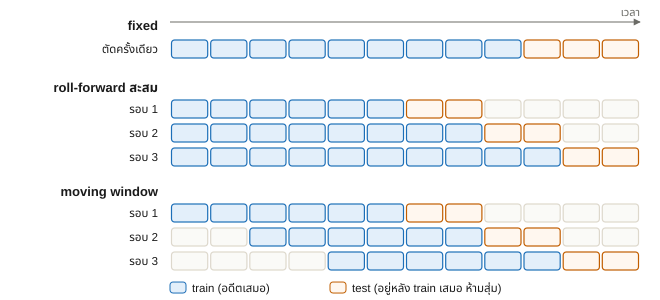
ทุกแบบให้ test อยู่หลัง train เสมอ ต่างกันที่ train: fixed ตัดครั้งเดียว แบบสะสมเก็บอดีตทั้งหมดไว้ train จึงยาวขึ้นทุกรอบ ส่วน moving window ทิ้งข้อมูลเก่าที่หลุดหน้าต่าง เหมาะเมื่ออดีตไกล ๆ ไม่เกี่ยวกับปัจจุบันแล้ว9
fixed partitioning ตัดครั้งเดียว เช่น 80/20 แล้วเทียบเส้นพยากรณ์กับค่าจริงในช่วง test10 ในกราฟนี้ test กระโดดสูงกว่าค่าที่โมเดลเคยเห็นใน train ทั้งหมด จึงเป็นการทดสอบที่ยาก ข้อเสียคือได้ error ค่าเดียว ถ้าช่วง test บังเอิญผิดปกติ ผลก็ผิดปกติตาม roll-forward แก้ด้วยการแบ่งหลายรอบแล้วเฉลี่ย และเป็นแบบที่งาน IS กับ thesis ใช้11
สไลด์แสดงแบบสะสมอีกแบบ: train เริ่ม Jan 1991 ทุกรอบ จบที่ Mar 2001, Apr 2001, … รวม 36 รอบ ส่วน test คือทุกเดือนที่เหลือ เขียนด้วย for loop12 ผลคือพยากรณ์ล่วงหน้า 1 เดือนมีให้วัด 36 ครั้ง แต่ 36 เดือนมีครั้งเดียว ตรงกับข้อความ roll-forward ให้ข้อมูลเรื่องการพยากรณ์ระยะสั้นมากกว่า และข้อมูลลดลงเมื่อพยากรณ์ไกลขึ้น แนวคิดนี้กลายเป็น tsCV ใน Lesson 10
temp.txt มี 142 ปี ถ้ากัน 36 ปีท้ายไว้เป็น test จะเหลือ train 106 ปี13 คำสั่งที่ขาดไม่ได้คือ ts() ถ้าไม่ใส่ R จะถือว่าเป็นข้อมูล cross-sectional14
temperature <- read.table("temp.txt")
new_temperature <- ts(temperature, start = 1856)
nValid <- 36
nTrain <- length(new_temperature) - nValid
train.ts <- window(new_temperature, start = 1856, end = 1856 + nTrain - 1)
test.ts <- window(new_temperature, start = 1856 + nTrain, end = 1856 + nTrain + nValid - 1)window() ตัดช่วงตามเวลาจึงรักษาลำดับไว้ ข้อควรระวัง: ถ้าใส่ start = 1856 ใน ts() แล้วไปตัดด้วย start = 1, end = 106 R จะหยุดด้วย error 'start' cannot be after 'end' เพราะเวลา 1 ถึง 106 อยู่ก่อนปี 1856 ทั้งหมด


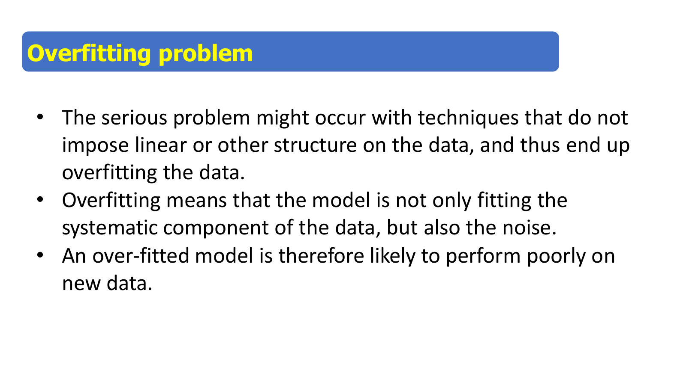

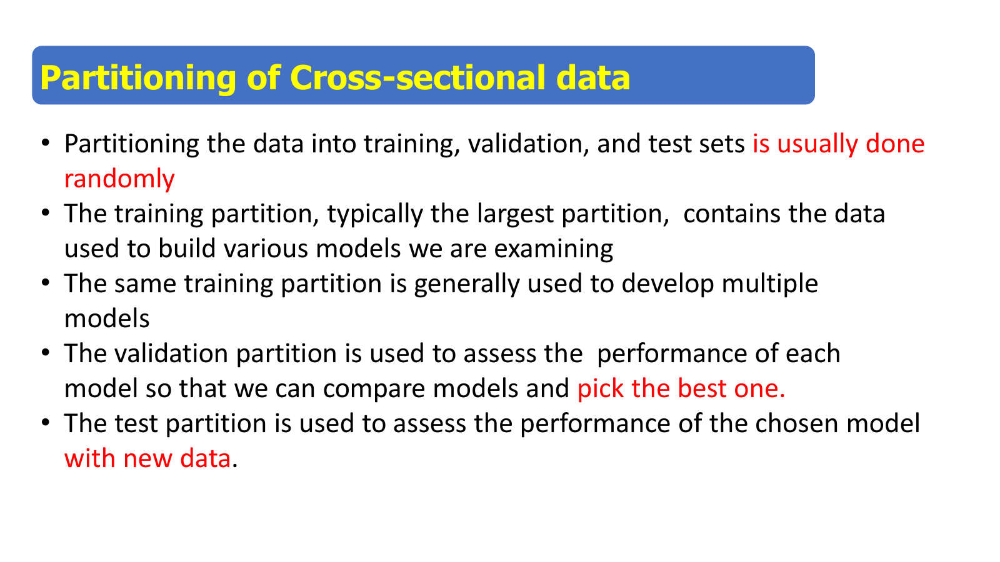
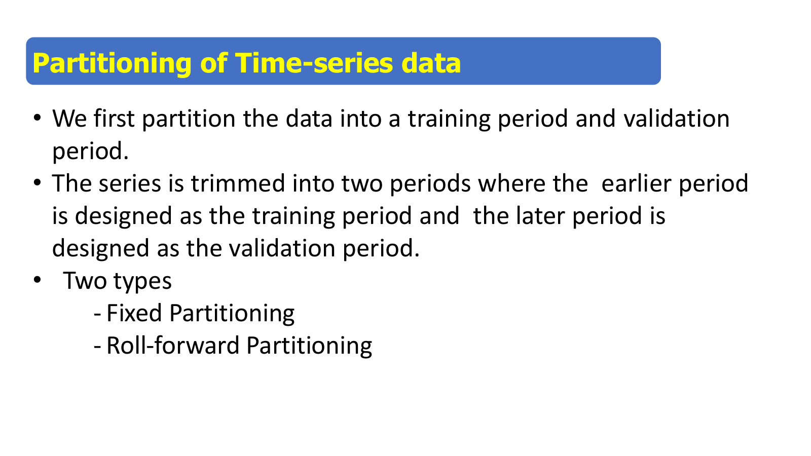

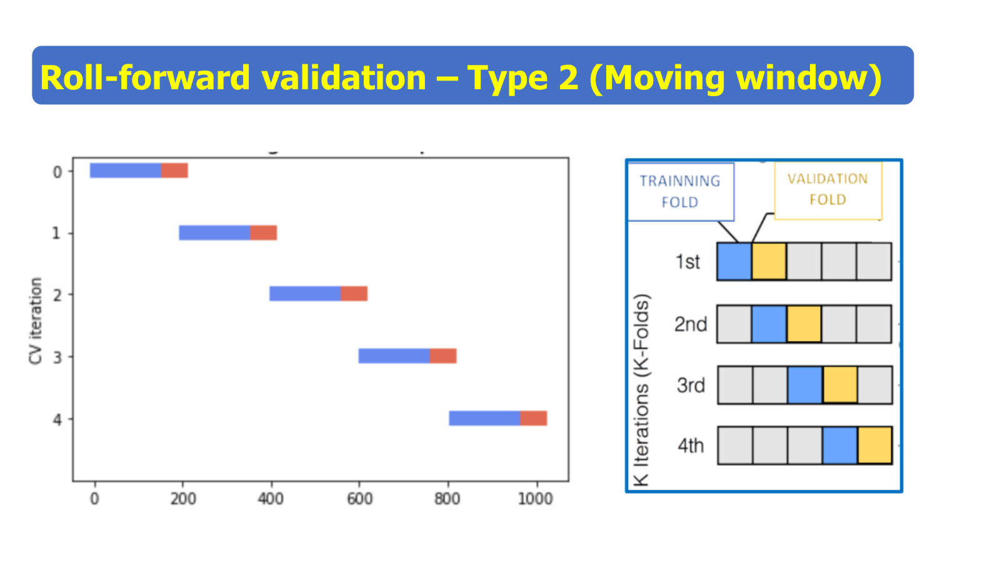

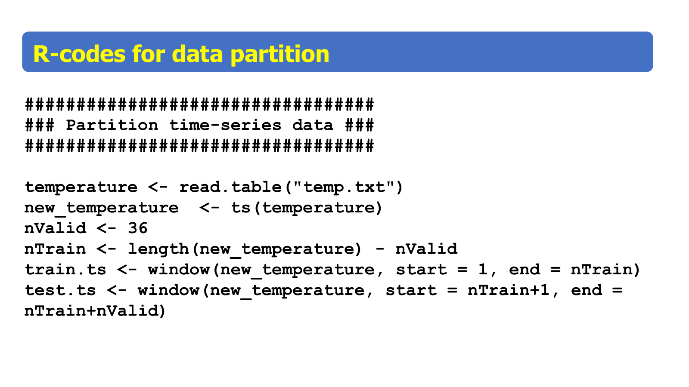
Y คือค่าจริง F คือค่าพยากรณ์ error = ค่าจริงลบค่าพยากรณ์ สูตรไม่ต้องท่อง อ่านชื่อจากหลังมาหน้า15: Root Mean Square Error = error → square ยกกำลังสอง → mean เฉลี่ย → root ถอดราก
สองหลักก่อนเข้าสูตร: คำนวณบน test set เท่านั้น เพราะ error บน training set ไม่มีประโยชน์ (overfitting)16 ควิซที่ให้คำนวณ RMSE หรือ MAE ก็ใช้เฉพาะ test set17 (ควิซเป็น open book ใช้คอมพิวเตอร์ได้แต่ไม่ใช้ AI18) และ error ต้องยกกำลังสองหรือใส่ค่าสัมบูรณ์ ไม่อย่างนั้นบวกลบหักล้างกัน19
| ตัววัด | หน่วย | บอกอะไร | ระวัง |
|---|---|---|---|
| RMSE (ไม่ถอดรากคือ MSE) | เดียวกับข้อมูล | ขนาดความคลาด ขยาย error ใหญ่ (8 → 64) | RMSE ≥ MAE เสมอ ห่างกันมากแปลว่ามี error ใหญ่บางจุด |
| MAE | เดียวกับข้อมูล | ขนาดความคลาดตามจริง | |
| MAPE | % | คลาดจากค่าจริงกี่เปอร์เซ็นต์ ธุรกิจนิยมเพราะเข้าใจง่าย20 | หารด้วยค่าจริง ถ้าค่าจริงใกล้ 0 จะพุ่งเป็นอนันต์ |
| MPE | % | ทิศทางเป็นเปอร์เซ็นต์ | บวกลบหักล้างกัน |
| ME | เดียวกับข้อมูล | ติดลบ = พยากรณ์สูงเกิน บวก = ต่ำเกิน | ใกล้ 0 ไม่ได้แปลว่าแม่น จึงไม่ค่อยนิยม21 |
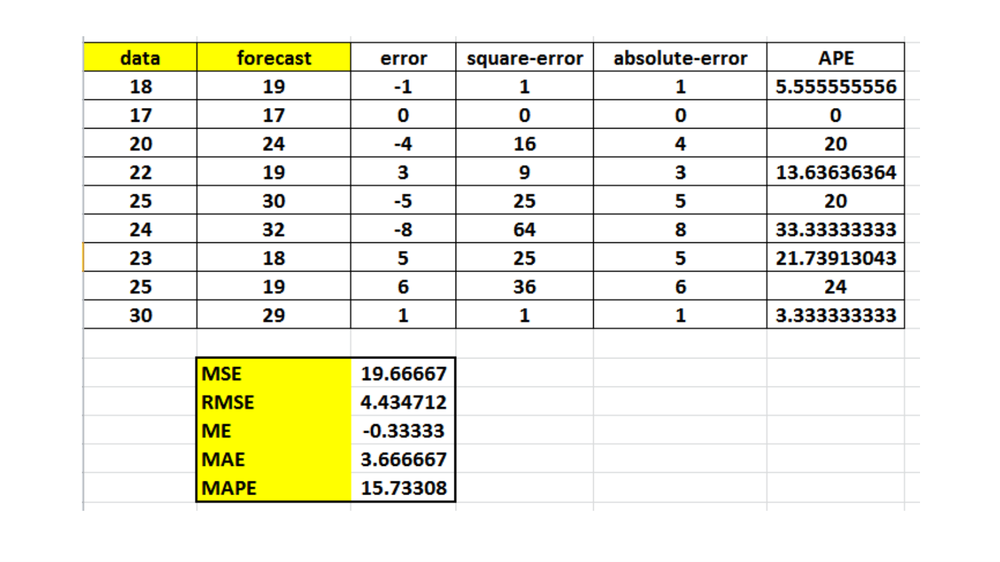
ตารางนี้มาจากไฟล์ Forecast Error Example ของวิชา MAPE ที่ได้ 15.73% อ่านว่าโดยเฉลี่ยคลาดราวบวกลบ 15%22 การ์ดข้างล่างคำนวณทุกค่าทีละคอลัมน์
| Y | F | e = Y − F | e² | |e| | |e| ÷ Y × 100 |
|---|---|---|---|---|---|
| 18 | 19 | −1 | 1 | 1 | 5.556 |
| 17 | 17 | 0 | 0 | 0 | 0 |
| 20 | 24 | −4 | 16 | 4 | 20.000 |
| 22 | 19 | 3 | 9 | 3 | 13.636 |
| 25 | 30 | −5 | 25 | 5 | 20.000 |
| 24 | 32 | −8 | 64 | 8 | 33.333 |
| 23 | 18 | 5 | 25 | 5 | 21.739 |
| 25 | 19 | 6 | 36 | 6 | 24.000 |
| 30 | 29 | 1 | 1 | 1 | 3.333 |
| ผลรวม | −3 | 177 | 33 | 141.598 | |
\(-3/9=-0.3333\) โดยเฉลี่ยพยากรณ์สูงกว่าค่าจริงเล็กน้อย
\(177/9=19.6667\) และ \(\sqrt{19.6667}=4.4347\)
\(33/9=3.6667\)
\(141.598/9=15.733\%\)
ใส่เครื่องหมายตาม e: \(-16.181/9=-1.80\%\)
งานจริงมักเลือกหนึ่งหรือสองตัว ที่นิยมคือ MSE กับ MAPE ดีที่สุดคือทุกตัวชี้ไปทางเดียวกัน แต่บางครั้งไม่ตรงกัน23 ใน R accuracy() ของ package forecast ให้ทุกตัวในคำสั่งเดียว ไฟล์ accuracy.txt มีคอลัมน์แรกเป็นค่าจริง คอลัมน์สองเป็นค่าพยากรณ์24
accuracy(f, x) รับค่าพยากรณ์ก่อนแล้วจึงค่าจริง แต่โค้ดบนสไลด์ส่งค่าจริงเป็นตัวแรก RMSE และ MAE เท่าเดิม แต่ ME กลับเป็น +0.333 และ MAPE กลายเป็น 15.799 เพราะหารด้วยค่าพยากรณ์ กับดักเดียวกันกลับมาอีกใน Lesson 11
library(forecast)
test <- read.table("accuracy.txt", h = T) # h = T คือบรรทัดแรกเป็นชื่อคอลัมน์
test <- ts(test)
accuracy(test[,2], test[,1]) # forecast ก่อน ค่าจริงหลัง> accuracy(test[,1], test[,2]) # ตามสไลด์: ค่าจริงอยู่ตำแหน่ง forecast
ME RMSE MAE MPE MAPE
Test set 0.3333333 4.434712 3.666667 -1.666443 15.799
> accuracy(test[,2], test[,1]) # ลำดับที่ถูก
ME RMSE MAE MPE MAPE
Test set -0.3333333 4.434712 3.666667 -1.797785 15.73308
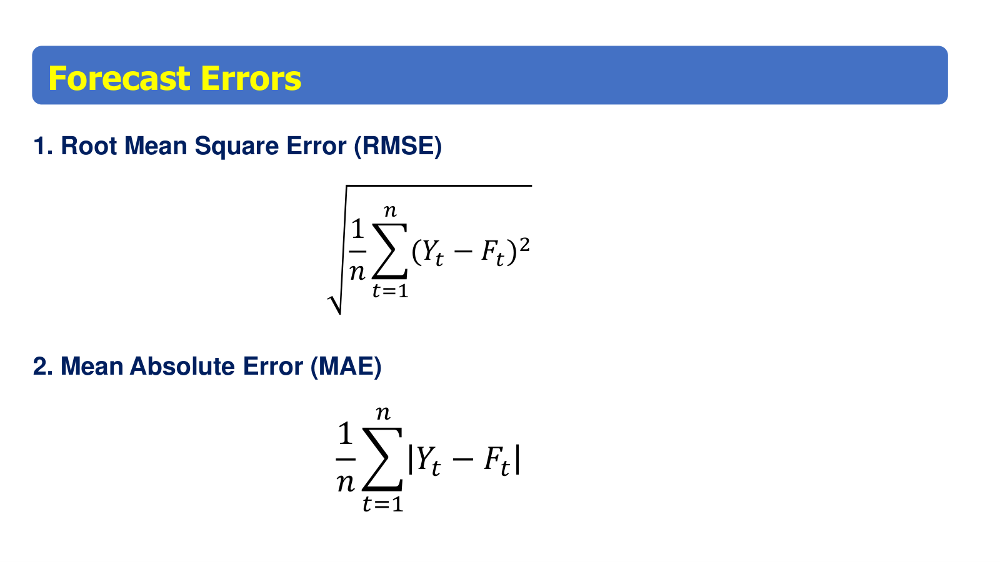
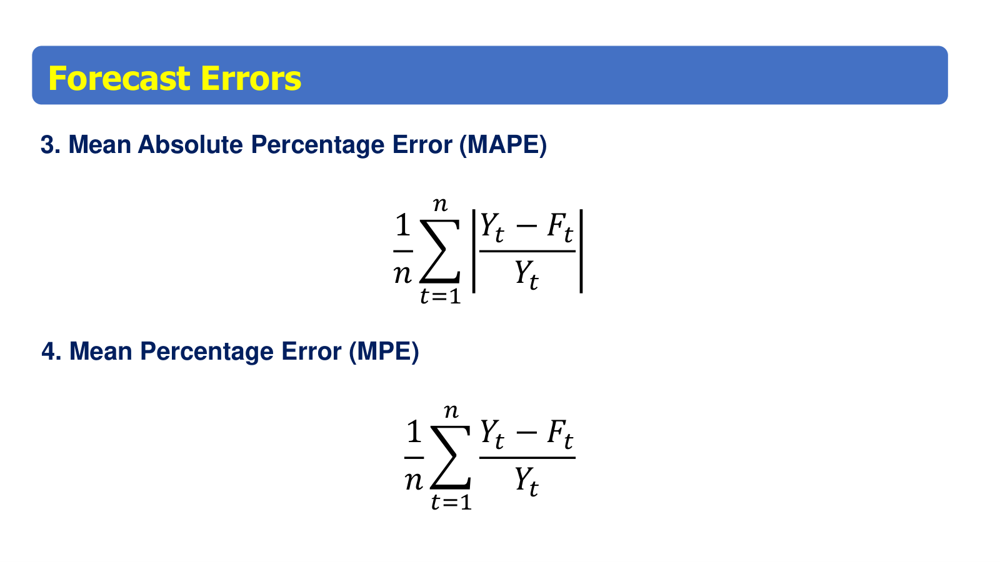
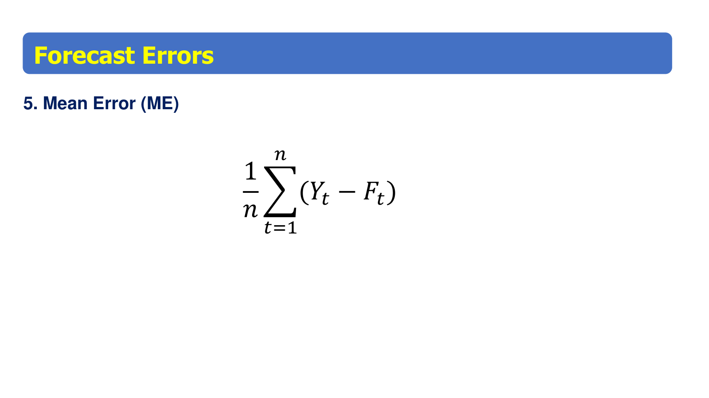

เกมทอยลูกเต๋าที่กติกาไม่เปลี่ยน ผลแต่ละตายังสุ่ม แต่ลูกเต๋าเป็นลูกเดิมตลอด สถิติของ 100 ตาแรกจึงคล้ายของ 100 ตาสุดท้าย ข้อมูลทุกตาจึงช่วยกันบอกนิสัยของลูกเต๋าลูกเดียวได้
คำถามหลักของวิชาคืออนุกรมนี้นิ่งหรือไม่25 Lesson 1 พบว่าแต่ละจุดเวลาเป็นตัวแปรสุ่มคนละตัว แต่มีข้อมูลค่าเดียวต่อเวลา ถ้าทุกเวลามีค่าเฉลี่ยและความแปรปรวนต่างกันหมด เราประมาณค่าไม่ได้ ทางออกคืออนุกรมที่กติกาไม่เปลี่ยนตามเวลา นิ่งในที่นี้หมายถึง distribution ไม่เปลี่ยนตามเวลา26
| ไม่นิ่งแบบ | เห็นอะไร | แก้ด้วย |
|---|---|---|
| มี trend | ตัดสองช่วงมาเทียบแล้ว mean ไม่เท่ากัน แม้เป็น normal เหมือนกันก็ถือว่าคนละ distribution27 | detrend, difference (Lesson 3) |
| มี seasonal | mean หน้าร้อนกับหน้าหนาวต่างกัน | seasonal difference (Lesson 9) |
| แกว่งไม่เท่ากัน | volatility ต่างกันตามช่วง | log (Lesson 7), ARCH/GARCH |
กลยุทธ์ของทั้งวิชาอยู่ในประโยคเดียว: ดึงส่วนที่ไม่นิ่งออกก่อน เอาส่วนที่นิ่งไปสร้างโมเดล แล้วค่อยปรับกลับ28 ซึ่งก็คือผังของ Lesson 7: transform, difference, โมเดล, แล้วแปลงกลับตอนพยากรณ์

เมื่อค่าติดกันสัมพันธ์กัน สิ่งที่ยังคงที่ให้ยึดได้คือการแจกแจงต้องขึ้นกับระยะห่างของเวลาเท่านั้น ไม่ขึ้นกับตำแหน่งของเวลา กราฟนี้ตัดช่วงต้นมาเทียบกับช่วงท้ายแล้วระดับกลางและความกว้างเท่ากัน สิ่งที่ต้องคงที่คือโอกาส ไม่ใช่ขอบเขตของค่า ค่าอาจหลุดไปถึง 6 สักครั้งก็ยังนิ่ง ตราบใดที่โอกาสหลุดเท่ากันทุกช่วง

stationarity หมายถึงสมบัติทางสถิติของ process ไม่เปลี่ยนตามเวลา ไม่ได้แปลว่าข้อมูลไม่เปลี่ยน แต่วิธีที่มันเปลี่ยนไม่เปลี่ยน กราฟแรกนิ่ง ADF = −6.128 กราฟที่สองระดับเฉลี่ยเลื่อนตามช่วงเวลา ไม่นิ่ง ADF เพียง −2.0251 (ADF ติดลบมากสนับสนุนว่านิ่ง สอนใน Lesson 3) วิธีตรวจด้วยตาคือแบ่งกราฟเป็น 3–4 ช่วงแล้วเทียบระดับกลาง ความกว้าง และรอบที่ซ้ำตามปฏิทิน
| ทำไมสำคัญ (สไลด์หน้า 22) | |
|---|---|
| สร้างโมเดลง่าย | สร้างโมเดลและศึกษาง่ายกว่ามาก |
| พยากรณ์ได้ | เพราะวิธีที่มันเปลี่ยนทายได้ อาจดู "ไม่น่าสนใจ" แต่ predictable29 |
| ทฤษฎีสร้างบนมัน | จึงมักต้องแปลงอนุกรมที่ไม่นิ่งให้นิ่งก่อน |
ทุกวันจับฉลากจากกล่องหนึ่งใบ เลขบนฉลากคือ \(X_t\) แบบเข้มต้องการให้ทุกวันใช้กล่องที่เหมือนกันทุกอย่าง แบบอ่อนดูแค่ตัวเลขสรุปของกล่อง (ค่าเฉลี่ย ความกระจาย และความเกี่ยวกันของสองวัน) ว่าเท่ากันทุกวันไหม
| strong (strict) | weak (second-order) | |
|---|---|---|
| เงื่อนไข | การแจกแจงร่วมของ \((X_{t_1},\dots,X_{t_n})\) เท่ากับของ \((X_{t_1+h},\dots,X_{t_n+h})\) ทุกชุดเวลา ทุก h ทุก n | (1) μₜ ไม่ขึ้นกับ t (2) γ(t, t+h) ขึ้นกับ h เท่านั้น ไม่ขึ้นกับ t |
| พิสูจน์ | ยาก ข้าม30 | หา mean กับ γ แบบ Lesson 131 |
| ความสัมพันธ์ | strong ⇒ weak เสมอ แต่ weak ⇏ strong | |
ความแปรปรวนคงที่รวมอยู่ในข้อ (2) แล้ว เพราะ h = 0 ให้ \(\gamma(t,t)=\mathrm{Var}(X_t)\) เมื่อ γ ขึ้นกับระยะห่างอย่างเดียว จึงย่อสัญกรณ์เป็น \(\gamma(h)\) และ \(\rho(h)=\gamma(h)/\gamma(0)\) ได้ เพื่อความง่ายของวิชา ถ้า weakly stationary ก็ถือว่า stationary32
ทำไม weak ไม่ให้ strong: กล่อง A มีฉลาก −1, +1 อย่างละใบ กล่อง B มี −2 หนึ่งใบ 0 หกใบ +2 หนึ่งใบ ทั้งสองมี mean 0 และ variance 1 ถ้าวันคี่จับจาก A วันคู่จับจาก B อย่างอิสระ จะผ่านแบบอ่อน แต่ไม่ผ่านแบบเข้ม เพราะวันคู่ได้ +2 ได้แต่วันคี่ไม่มีทาง Exercise 1 ข้อ 1 ในตอน 4 คือตัวอย่างแบบนี้
ถ้ามี t อยู่ สรุปว่าไม่นิ่งได้ทันที ถ้าเป็นค่าคงที่ (ไม่จำเป็นต้องเป็น 0) ไปขั้นต่อไป
นับ w ที่ตรงกันแบบ Lesson 1 ไล่ไปจนถึงระยะห่างที่ไกลที่สุดในสมการ อย่าหยุดเร็ว
ขึ้นกับ h เท่านั้นจึงนิ่ง เทคนิคคือแทน t ด้วยสองค่า เช่น 1 กับ 10 ถ้าผลต่างกันแปลว่าขึ้นกับเวลา
หาร \(\gamma(h)\) ทุกตัวด้วย \(\gamma(0)\)

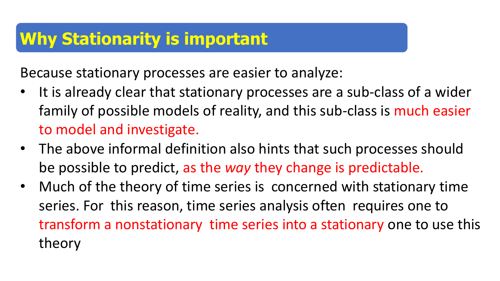
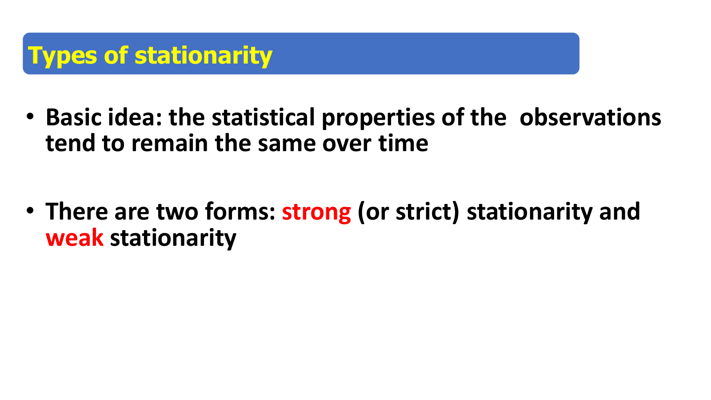


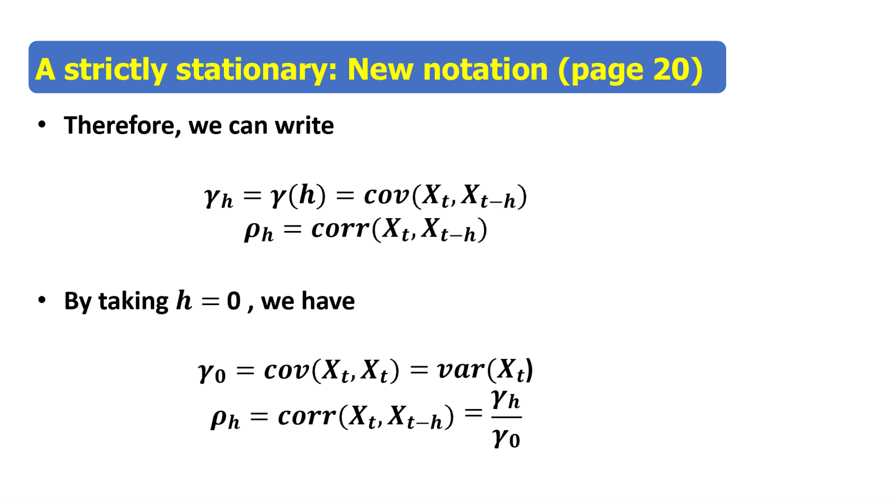
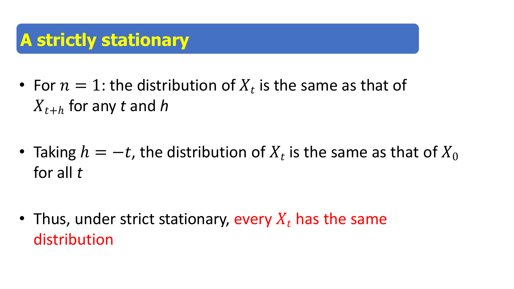

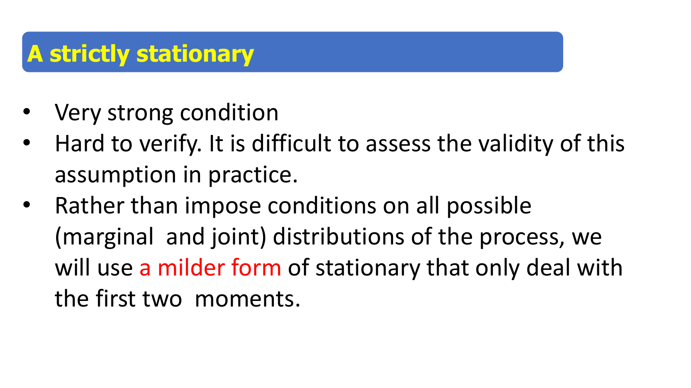
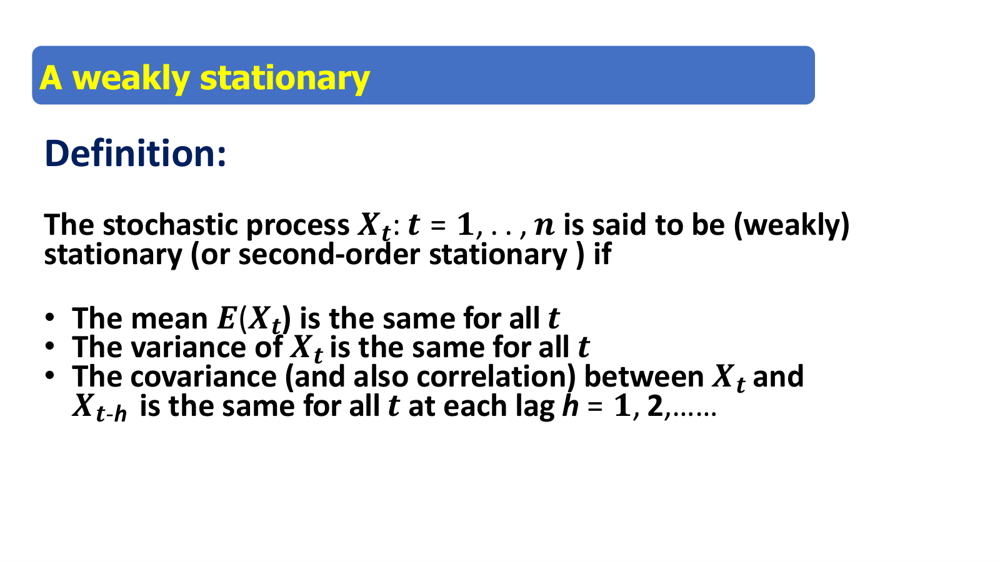
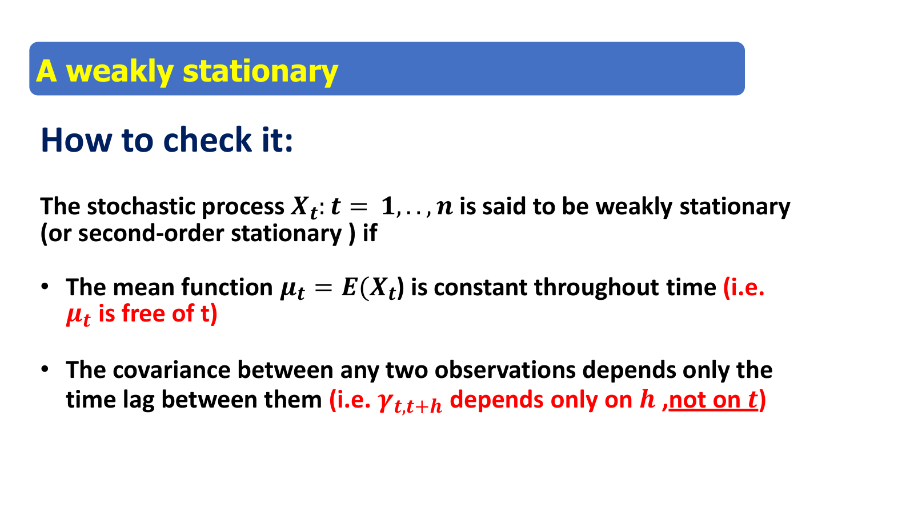

ชีวิตจริงไม่รู้ว่าข้อมูลมาจากโมเดลใด แต่ถ้าศึกษาแบบแผนของแต่ละโมเดลไว้ก่อน เมื่อข้อมูลจริงคล้ายโมเดลใด ก็ใช้โมเดลนั้น33 เหมือนเรียนลักษณะของโรคก่อนไปวินิจฉัยคนไข้จริง white noise เป็นข้อที่ง่ายที่สุด: mean 0, \(\gamma(0)=\sigma^2\) และ \(\gamma(h)=0\) เมื่อ h ≠ 0 จึง stationary34
\(E(x_t)=0\) และ \(\gamma(0)=\sigma^2+4\sigma^2+\sigma^2=6\sigma^2\) โดยดึงสัมประสิทธิ์ 2 กับ 2 ออกมาเป็น \(4\sigma^2\)35
\(x_{t+1}=w_t+2w_{t+1}+w_{t+2}\) ตรงกันที่ \(w_t\) (2·1) และ \(w_{t+1}\) (1·2): \(4\sigma^2\)
\(x_{t+2}=w_{t+1}+2w_{t+2}+w_{t+3}\) ตรงกันแค่ \(w_{t+1}\) (1·1): \(\gamma(2)=\sigma^2\) ไม่ใช่ \(2\sigma^2\)
ไม่มีตัวตรงกันจึงเป็น 0 ได้ \(\rho(1)=2/3\), \(\rho(2)=1/6\)
เห็น 6 แล้ว 4 คนมักเดาว่าตัวต่อไปเป็น 2 แต่ค่าจริงคือ \(\sigma^2\) ต้องคูณกระจายจริงเสมอ36 อย่าเชื่อเพียงเพราะฟังดูมีเหตุผล37 วิธีกันพลาดคือเขียนสัมประสิทธิ์ของสองก้อนเรียงเป็นตาราง แบบภาพลูกบอลใน Lesson 1 ตอน 5.1
random walk \(x_t=w_1+\dots+w_t\) (การบ้าน) มี \(E(x_t)=0\) ผ่านข้อแรก แต่ \(\mathrm{Var}(x_t)=t\sigma^2\) และ \(\gamma(t,t+h)=t\sigma^2\) มี t อยู่ จึงไม่ stationary ทั้งที่ค่าเฉลี่ยคงที่38 ต้องตรวจครบสองข้อเสมอ

Exercise ให้ตรวจสามโมเดล โดย \(w_t\sim N(0,\sigma^2)\) ข้อ (a) เป็นข้อสอบเก่า ข้อ (b) เป็นการบ้าน ข้อ (c) ยากที่สุดและมีเฉลยในห้อง ข้อ (a) ทดสอบความพยายามโดยตรง สมัยก่อน 70% ทำถูก อีก 30% เห็น lag 1, 2 เป็น 0 แล้วอนุมานว่า lag 3 ก็เป็น 0 ซึ่งผิด39
\(E(x_t)=0\) และ \(\gamma(0)=\sigma^2+(-1)^2\sigma^2=2\sigma^2\)
ไม่มีตัวตรงกับ \(w_t,w_{t-3}\) จึงเป็น 0
\(x_{t+3}=w_{t+3}-w_t\) ตรงกันที่ \(w_t\) (+1 กับ −1): \(\gamma(3)=-\sigma^2\)
0
| moment ของ \(W\sim N(0,\sigma^2)\) | ค่า | ทำไม |
|---|---|---|
| \(E(W)\), \(E(W^3)\) | 0 | ลำดับคี่ของการแจกแจงที่สมมาตรรอบ 0 |
| \(E(W^2)\) | \(\sigma^2\) | |
| \(E(W^4)\) | \(3\sigma^4\) | จึงได้ \(\mathrm{Var}(W^2)=3\sigma^4-\sigma^4=2\sigma^4\) |
ข้อ (b), (c) ต้องรู้ moment ก่อน ถ้าไม่รู้ว่า moment คืออะไรจะทำไม่ได้ตั้งแต่ต้น41 สูตรทั่วไปเมื่อ μ ≠ 0 คือ \(E(W^2)=\mu^2+\sigma^2\), \(E(W^3)=\mu^3+3\mu\sigma^2\), \(E(W^4)=\mu^4+6\mu^2\sigma^2+3\sigma^4\)42
\(E(x_t)=0-\theta\sigma^2=-\theta\sigma^2\) ไม่ใช่ 043 แต่ไม่มี t จึงผ่าน
\(w_t\) กับ \(w_{t-1}^2\) คนละเวลาจึงอิสระ: \(\sigma^2+\theta^2(2\sigma^4)=\sigma^2+2\theta^2\sigma^4\)
คู่ที่มีตัวร่วมคือ \(w_t\) กับ \(-\theta w_t^2\): \(-\theta[E(w_t^3)-E(w_t)E(w_t^2)]=0\)
คนละจุดเวลาถือว่า covariance เป็นศูนย์ แม้อยู่ในฟังก์ชันที่ต่างกัน44
ข้อ (b) \(x_t=w_tw_{t-2}\): mean = \(E(w_t)E(w_{t-2})=0\), \(\gamma(0)=E(w_t^2)E(w_{t-2}^2)=\sigma^4\) และ \(\gamma(h)=0\) เมื่อ h ≠ 0 เพราะมี w ตัวที่ปรากฏครั้งเดียวในผลคูณเสมอ จึง stationary และหน้าตาเหมือน white noise ทั้งที่ \(x_t\) กับ \(x_{t+2}\) ใช้ \(w_t\) ร่วมกัน นี่คืออีกตัวอย่างของ cov = 0 แต่ไม่อิสระ (Lesson 1 ตอน 3.2)
Exercise 1 มีแปดข้อ ข้อ 3 ทำไปแล้วในตอน 4.1 ข้อ 5–8 (sample ACF, differencing, R) อยู่ใน Lesson 3 ส่วนข้อ 1, 2, 4 ใช้วิธีของบทนี้
\(E(X_t)=0\) และ \(\gamma(0)=(1+1.44+2.56)(0.25)=1.25\)
ตรงกันที่ \(w_t\) (1·−1.2) และ \(w_{t-1}\) (−1.2·−1.6): \((-1.2+1.92)(0.25)=0.18\)
ตรงกันที่ \(w_t\) (1·−1.6): \(-0.4\) ส่วน \(|h|\ge3\) เป็น 0
\(\rho(1)=0.144\), \(\rho(2)=-0.32\) ตรวจด้วย ARMAacf(ma = c(-1.2, -1.6), lag.max = 3)
t คู่: 0 และ t คี่: \((1-1)/\sqrt2=0\)
t คู่: 1 และ t คี่: \(\mathrm{Var}(Z^2)/2=(3-1)/2=1\)
คู่ที่ติดกันใช้ \(Z_{t-1}\) ร่วมกัน: \(E(Z^3)/\sqrt2=0\) คู่อื่นใช้ Z คนละตัวจึงเป็น 0
\(\cos(ct)E(w_0)=0\) ทุก t
ส่วนที่สุ่มคือ \(w_0\) ตัวเดียว: \(\gamma(t,t+h)=\sigma^2\cos(ct)\cos(c(t+h))=\tfrac{\sigma^2}2[\cos(ch)+\cos(c(2t+h))]\)
| โมเดล | Mean | \(\gamma(0)\) | \(\gamma(h)\) ที่ไม่เป็น 0 | Stationary |
|---|---|---|---|---|
| White noise | 0 | \(\sigma^2\) | ไม่มี | ใช่ |
| \(w_{t-1}+2w_t+w_{t+1}\) | 0 | \(6\sigma^2\) | \(\gamma(1)=4\sigma^2\), \(\gamma(2)=\sigma^2\) | ใช่ |
| Random walk | 0 | \(t\sigma^2\) | \(t\sigma^2\) | ไม่ |
| \(w_t-w_{t-3}\) | 0 | \(2\sigma^2\) | \(\gamma(3)=-\sigma^2\) | ใช่ |
| \(w_tw_{t-2}\) | 0 | \(\sigma^4\) | ไม่มี | ใช่ |
| \(w_t-\theta w_{t-1}^2\) | \(-\theta\sigma^2\) | \(\sigma^2+2\theta^2\sigma^4\) | ไม่มี | ใช่ |
| \(w_t-1.2w_{t-1}-1.6w_{t-2}\) | 0 | 1.25 | \(\gamma(1)=0.18\), \(\gamma(2)=-0.4\) | ใช่ |
| \(w_0\cos(ct)\) | 0 | \(\sigma^2\cos^2(ct)\) | ขึ้นกับ t | ไม่ |
โมเดลที่นิ่งมี γ ขึ้นกับ h อย่างเดียวเสมอ ส่วนโมเดลที่ไม่นิ่งมี t โผล่ที่ใดที่หนึ่ง สังเกตว่าโมเดลที่เป็นผลรวมของ w ทุกตัวนิ่งและ γ ตัดเป็นศูนย์หลัง lag สุดท้ายในสมการ ซึ่งคือ MA(q) ของ Lesson 5 ภาคทฤษฎีช่วงต้นมีราว 3 ส่วน ต่อจากนี้เป็น data analysis46 white noise เองไม่ออกข้อสอบโดยตรงเพราะง่ายที่สุด47 แต่ทุกข้อใช้สมบัติของมัน
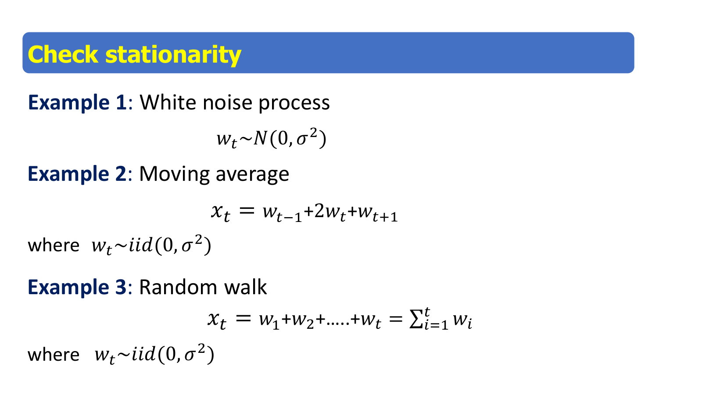
หน้าแบบฝึกมีข้อสอบปลายภาคปีก่อน ๆ ที่ออกจากบทนี้พร้อมแม่แบบคำตอบ ลองฝึกต่อในแบบฝึก Lesson 2 หรืออ่านต่อ Lesson 3 — ประมาณ ACF จากข้อมูล, correlogram, ADF test, detrending และ differencing
ตัวเลขยกในเนื้อหาชี้มาที่รายการนี้ แต่ละรายการระบุคลาสและนาทีของคลิป พร้อมถ้อยคำในคลิปเมื่อมี
| หน้า | เนื้อหา | อยู่ในตอน |
|---|---|---|
| 1 | ปก Performance Evaluation | etc — ปก |
| 2–12 | ทำไมต้องประเมิน, cross-validation, overfitting, data partitioning, fixed, roll-forward, R-codes | ตอน 1 |
| 13–17 | Forecast errors, ตาราง Excel, R-codes | ตอน 2 |
| 18 | หน้าคั่น Stationary Time Series | etc — หน้าคั่น |
| 19–32 | Consistency, stationarity, why important, types, strictly stationary, new notation, weakly stationary | ตอน 3 |
| 33–34 | Check stationarity สามตัวอย่าง และ Exercise สามโมเดล | ตอน 4 |
แหล่งอื่นที่ใช้: Class 2 ช่วง 0:40–1:16 (performance evaluation และ R) และ 1:47–2:44 (stationarity และโจทย์), Class 4 ช่วง 0:15 และ 0:21 (ห้ามใช้ test set และควิซ RMSE/MAE), Exercise 1 ข้อ 1–4 (ตอน 4), ไฟล์ Forecast Error Example.xlsx, accuracy.txt, temp.txt และ R_codes ในโฟลเดอร์ CLASS 2